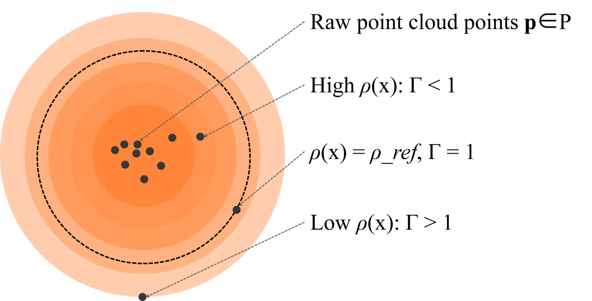
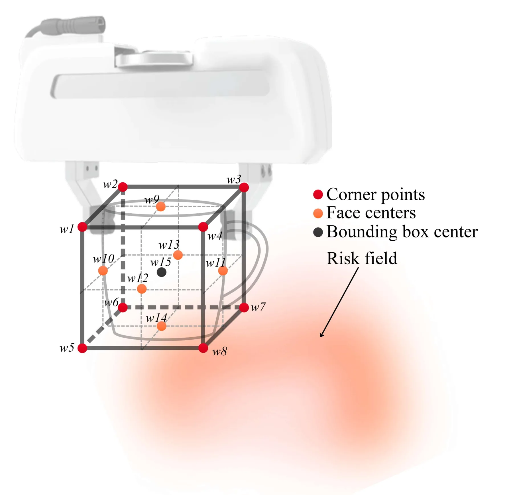
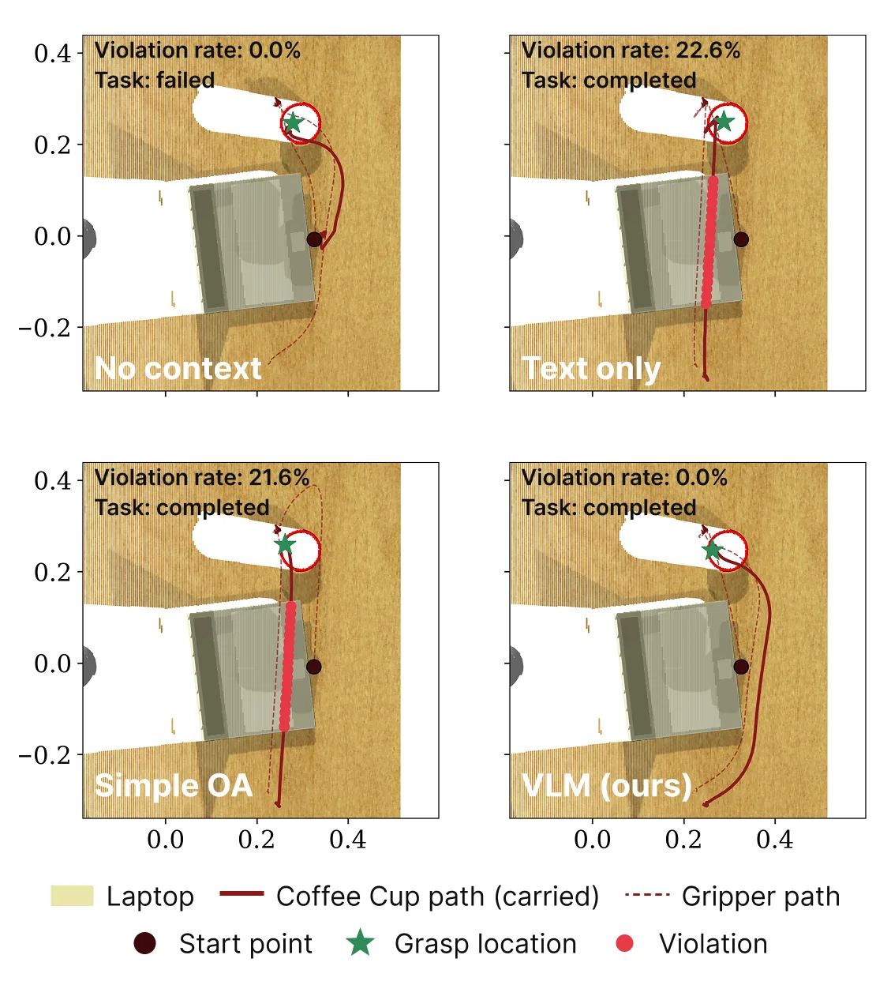
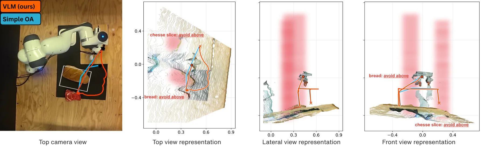

把物体间危险推理落到 3D 风险场，实现任务条件化的安全
Grounding Object-to-Object Hazard Reasoning into 3D Risk Fields for Task-Conditioned Safety
一句话：它给“语义 → 几何约束”造了一个窄而干净的接口——VLM 只输出“哪两个物体、哪种空间关系要避开”，剩下的由分割+深度+体素密度转成一个有明确表面边界条件（Γ=1）的连续场，交给经典的 obstacle modulation 滤波器执行。价值在于接口设计，而不是 VLM 本身。
Safe success rate (sim)
False rejections on safe variants
Real-world safe success
作者、单位与技术谱系 · Research context
作者与单位
研究脉络
- Semantically safe robot manipulation（Brunke 等，2025）方法上游关系：同样用基础模型推断语义危险并交给 CBF-QP 执行，但只让 LLM 在 SAM/CLIP 的标签集合上推理；本文改为让 VLM 直接看图像与任务，并把输出落到三维场。[论文 §II-C、§V-D 与参考文献 [5]]
- CORE（上下文安全推理与落地）上游对照关系：同样从图像直接导出危险区域，但其危险定义是环境固有的、不随任务变化；本文强调按任务条件化。[论文 §II-C 与参考文献 [7]]
- 本篇推进：关系级危险 + 连续风险场 + 任务拒绝本篇推进关系：把“危险”细化到物体对与空间关系，并用连续场把语义结论接到经典调制滤波器，同时把“任务该不该做”独立成一级判断。[论文 §IV、§V-F]
合作网络
- McGill 计算机系 ↔ McGill 电子与计算机工程系Department of Computer Science, McGill University → Department of Electrical and Computer Engineering, McGill University关系：共同署名[论文首页作者与单位]
- 本篇 ↔ obstacle modulation（Coulombe & Lin, 2023）本篇的风险场执行层 → Coulombe & Lin 的 obstacle modulation关系：技术依赖[论文 §IV-C 与参考文献 [14]]
- 本篇 ↔ 团队前作（Abyaneh / Guzmán / Lin）Mariana Sosa Guzmán、Amin Abyaneh、Hsiu-Chin Lin → Globally Stable Neural Imitation Policies（ICRA 2024）、Contractive Dynamical Imitation Policies（ICLR 2025）关系：共同署名[论文参考文献 [18][21]]
单位与角色来自首页逐人标注；网络边中“共同署名”来自作者列表，“技术依赖”来自正文对 [14] 的改造说明，团队前作来自参考文献署名重合，均不推断师生关系。
方法本质拆解 · What actually changed
是不是微调？
没有任何训练：VLM 以零样本方式通过函数调用使用，分割（SAM-3）与避障调制也都是现成模块。作者只做了一个“选型实验”，在七个 VLM 上比较工具调用与纯提示两种用法的 F1、漏检与误拒，最后按性能/成本折中选 GPT-4o 用于全部实验；其余超参（β、κ、深度分位窗口、包围盒构造）都是人工设定，未做学习。
有没有额外约束？
约束有三层：语义层是固定五元关系词表（avoid_above/below/inside/between/collision），所有危险必须能表达成其中一种；几何层是每种关系对应的点云变换（例如竖直拉伸到固定最大高度形成柱体，avoid_collision 不拉伸）与体素/高斯尺度；执行层是 Γ 的边界条件（表面 =1）与包围盒角点/面心取 min 的接近度定义。另有输入约束：只用初始时刻一张配准 RGB-D，相机内外参需标定。
推理/后端到底做了什么？
推理是一次性前端：VLM 判定拒绝或吐出危险元组 → SAM-3 分割 → 深度反投影与关系变换 → 体素化与平滑 → Γ 场，然后整个执行过程都用这个固定的场做调制，没有在线重规划或重推理。调制在每个控制周期读当前被操作物位姿，取包围盒若干点的最小 Γ 作为接近度，据此修正标称速度；标称控制器本身不知道危险存在。
方法本质是什么？
本质是设计一个“语义→几何”的窄接口：语言模型只负责“哪两个物体、哪种关系不能发生”，几何管线负责把这句话变成一个有零水平集的连续场，经典滤波器负责执行。它没有做的是：没有学习安全策略、没有形式化保证、也没有在线更新场景；一旦物体移动或任务改变，需要重新走一遍前端。
输入一张 RGB-D + 一句任务指令，改变的是“语义危险如何变成控制器可用的几何约束”，动作是用 VLM 函数调用输出物体对与空间关系、再经分割/深度/体素平滑转成带表面边界条件的 Γ 场并交给避障调制，直接效果是可预防场景的安全成功率从基线的 0–51.7% 提到 81.4% 且安全变体零误拒。

桥接价值Bridge
桥接价值
它把“语义安全”拆成两个可分别验证的决策：任务级拒绝（执行本身必然导致不可恢复后果，例如金属杯进微波炉）与轨迹级规避（把咖啡端过笔记本旁可以绕开）。前者是二值门控，后者需要几何表示——这正是很多“LLM 做安全”的工作缺失的一环：语言结论无法直接喂给控制器。第二个桥接点是安全变体这一评测类别：同一任务但把危险物换掉，专门测方法会不会过度保护（误拒或过度修正），这比只报“危险是否避免”更能暴露系统在真实部署中的可用性。
方法与模块Method
方法摘要
推理用 schema 化函数调用而非自由文本：VLM 要么调用拒绝函数给出 δ=1，要么返回一组危险 h_i=(a_i, b_i, c_i, r_i)，其中 a 是被操作物、b 是危险锚物、c 是危险描述、r 是五种空间关系之一（avoid_above / below / inside / between / collision）。落地时用 SAM-3 得到两物体掩码，配准深度反投影到世界系得到点云；按关系对 b 的点云做几何变换（如 avoid_above 沿竖直方向拉伸成柱体，avoid_collision 不拉伸），再体素化累计点数并做高斯平滑得到密度 ρ(p)。为使下游调制滤波器可用，定义 ρ_ref=β·median ρ，并用 Γ(x)=1+ln(ρ_ref/ρ(x))/κ 把密度变成满足“表面为 1、外部 >1、内部 <1”的连续函数。执行侧对被操作物取轴对齐包围盒的角点与面心，用 Γ_a,b=min Γ(w_i) 作为接近度，喂给 obstacle modulation 修正标称速度。
可迁移模块
第一是“点云 → 连续场”的那一步：不做形状基元拟合，直接用体素密度 + 高斯平滑 + 对数变换，把任意非凸危险区域变成有明确零水平集的函数，这对我们想把“语义区域”变成可微/可约束对象时很省事。第二是体积化评估：用包围盒的角点与面心而不是末端执行器单点去取 min Γ，避免“执行器在危险区外、但手里物体已经进去”的漏判。第三是两级门控的实验设计：把“应该拒绝”和“应该绕开”分开测，再加上“安全变体”测误报，这套三分法可以直接搬来做我们自己的安全/异常检测评测。

证据Evidence
关键证据与数字
仿真执行（Table II，10 次场景随机化 × 3 次重复）：总体成功率 89.4%±0.9（无上下文 70.6、纯文本 60.1、简单避障 90.0），安全成功率 81.4%±0.9（45.6 / 34.5 / 51.7），违规率 4.4%±0.4（6.5 / 7.3 / 15.2）。分场景看更清楚：抽屉-植物 安全成功率 80.0% 而三个基线都是 0.0%，笔记本-杯子 60.0%（无上下文 46.7%），牛排滴水 57.6%（基线 0.0%，但基线成功率 100% 是以违规为代价）。拒绝消融（Table III）：不可恢复危险 96/96 全部正确拒绝；误拒方面本文在 93 个可预防危险与 90 个安全变体上都是 0 次误拒，而“任务 + 场景文本”版本误拒 63/93 与 42/90。真机（Panda，每场景 5 次）：笔记本-杯子 安全成功率 100%（基线 20%），牛排滴水 80%（基线 20%），违规率均为 0。
边界与下一步Limits & Next Step
边界与风险
作者明确承认的限制是关系词表固定为五种、只处理空间关系，像“随暴露时间增长”或“依赖先前动作历史”的危险不在范围内。我们另需核验：风险场只由初始时刻的单张 RGB-D 构造，物体被移动或遮挡后场不会更新，因此它本质是“静态先验场 + 在线调制”，不是在线更新的安全集；场景规模很小（3 个可预防 + 3 个拒绝 + 3 个安全变体），真机只测 2 个场景各 5 次；VLM 选型（GPT-4o）是在一个前置对比里定的，表 I 显示更强模型的成本高一个量级（Claude Fable 5.1 相对成本 10.7），换模型会改变误拒与漏检的平衡。还有一点要写清：obstacle modulation 不提供 CBF 那样的形式化保证，本文也没有声称继承这类保证。
下一步实验
第一，把静态单帧场换成随位姿增量更新的场：用我们的里程计/SLAM 把每帧观测的风险点累积到同一世界系，观察在物体被移动后场是否仍能给出正确约束——这是我们的链路能直接补上的部分。第二，做噪声敏感性：人为扰动深度（毫米级）与分割掩码（膨胀/腐蚀），测 Γ 场与最终安全成功率的变化，判断这套几何接口对感知误差的鲁棒性。第三，把执行端从 obstacle modulation 换成 CBF-QP，比较“有形式化约束但需预定义安全集”与“VLM 给场 + 调制”的取舍，并加入更多安全变体测过度保护。





